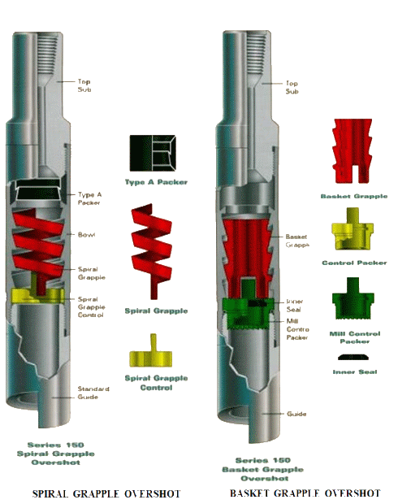
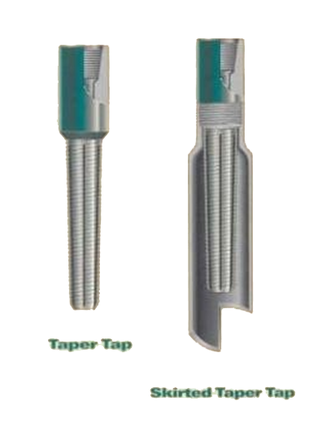
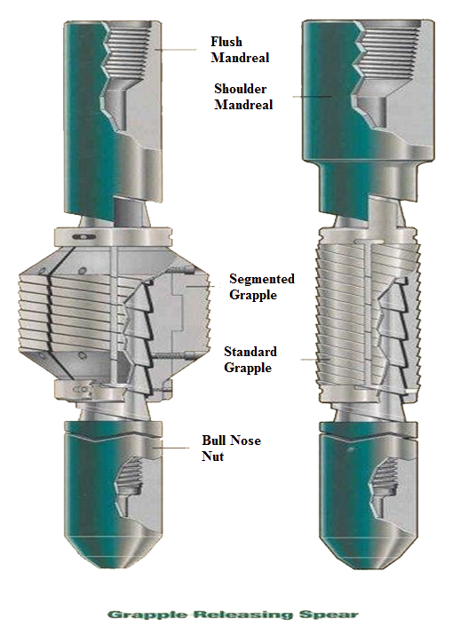
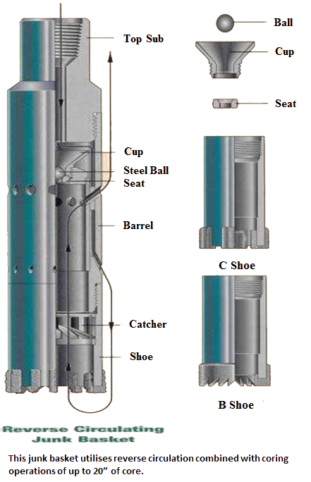
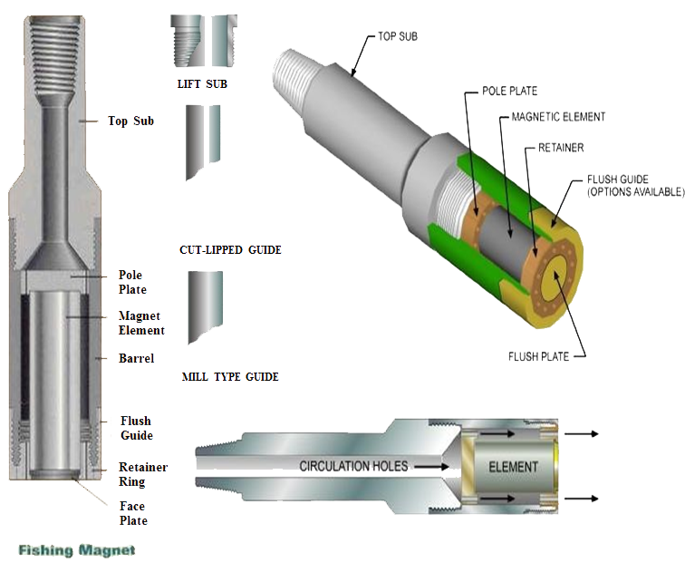
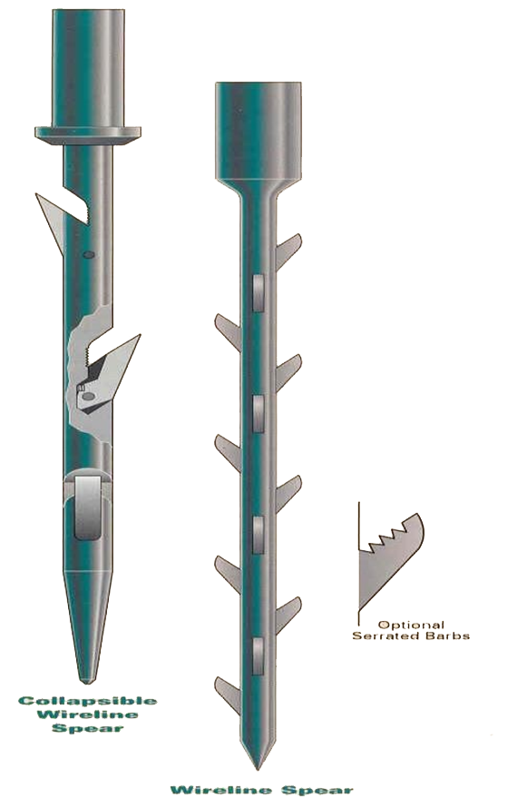
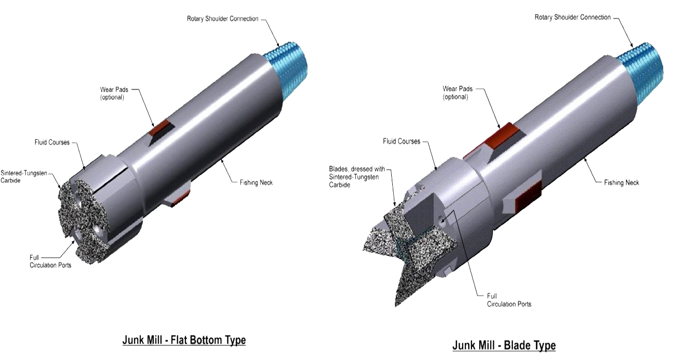

The Rig Equipment used for the purpose of retrieving from the wellbore sections of pipe, casing or other items which may have become stuck or inadvertently dropped in the hole. These are the following :
Overshot
Overshot is an external catch fishing tool designed to retrieve tubular items from the well bore.

Taper Tap
Is an internal catch fishing tool designed to retrieve tubular members from the wellbore. The wicker thread was allowed to be embedded into the interior of the fish.

Grapple Spear
Is also an internal catch fishing tool designed to retrieve tubular members from the wellbore.
The grapple spear is run in and positioned inside the fish. Rotating the Grapple Spear one turn to the left will engaged the grapple and caused tapers on the mandrel to expand the grapple and bite into the fish.

Junk Basket
Is a junk retrieval tool designed to remove all type of objects from the bottom of the well. Such items as slip, hand tools, bit cones and any other pieces of junk in the well.

Fishing Magnet
Is a junk retrieval tool designed to effectively remove metal particles, shavings and debris from the bottom of the wellbore.
The assembly is run in the hole and hold 6 to 12 inches above the fish. Circulate generously to wash away cuttings. Reduce circulation, lower the magnet to the fish and rotate slightly to obtain good contact. Cut off circulation and pull out of hole.

Wire-line Spear
Is a junk retrieval tool designed to retrieve wire-line and wire rope from the wellbore.
The spear is made up and run in hole, upon reaching the wire to be retrieved the spear is lowered slowly allowing the barbs to engage the wire. The spear is then lifted out of the hole.

Junk Mill
Designed to mill fish such as packers, squeeze tools, perforating guns, drill pipe, tool joints, reamer, reamer blades and rock bits.

Casing Scraper
Designed to remove scale, mud cake, cement sheath, embedded bullets, and other foreign materials inside the casing wall.